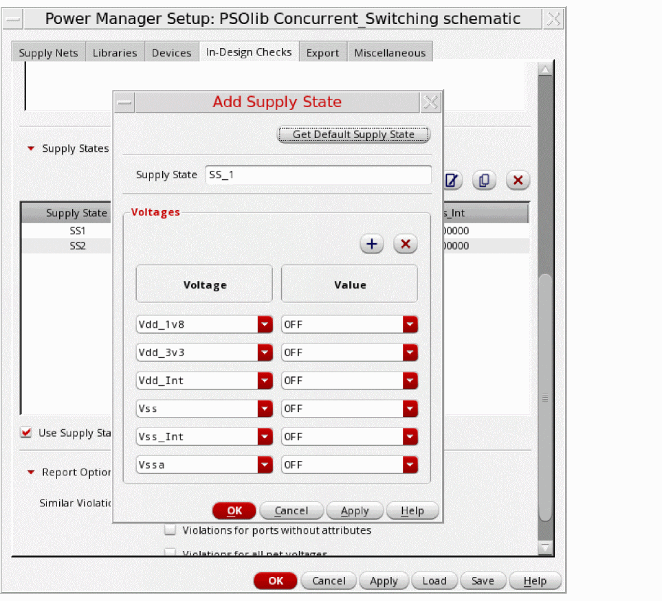
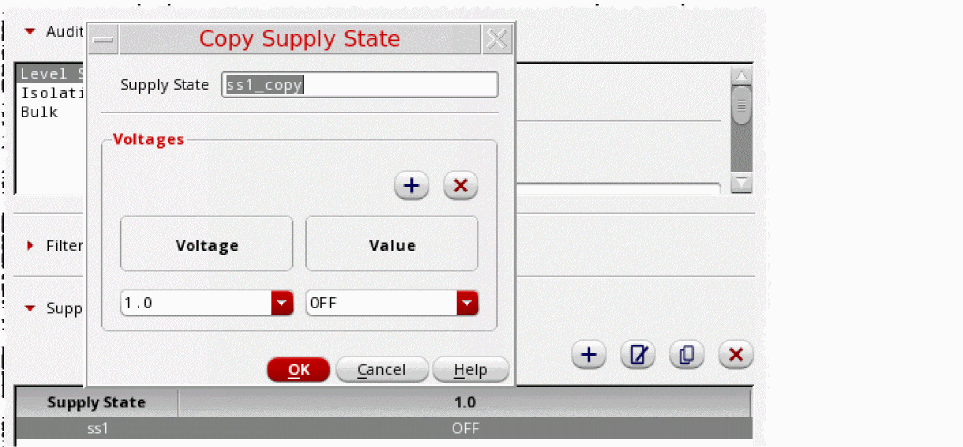
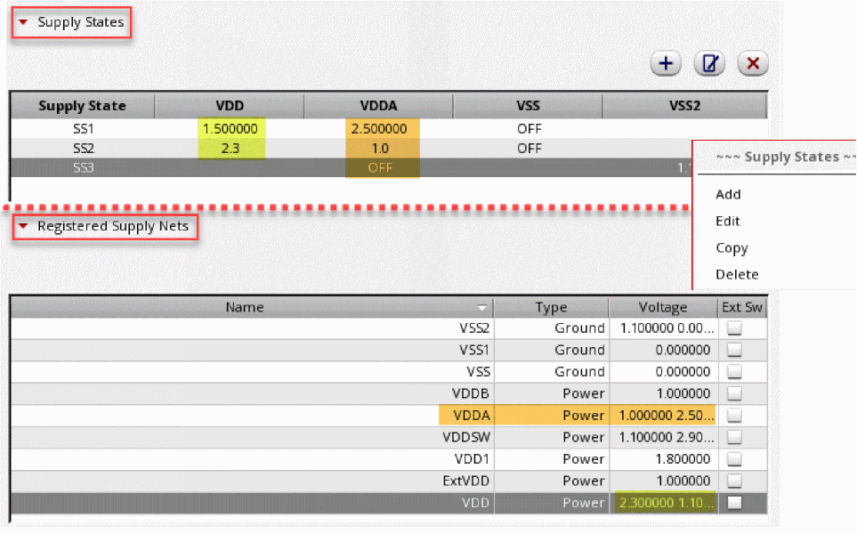
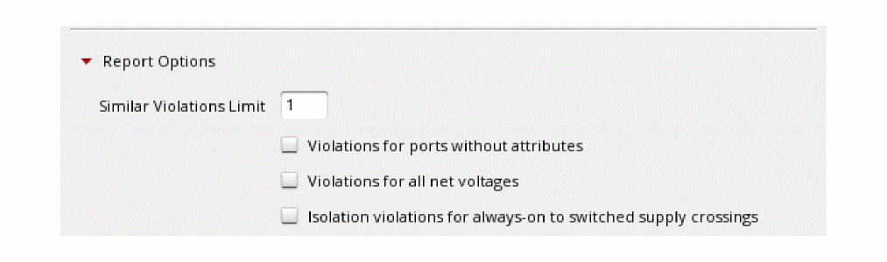

Setting Supply States
When a design uses multiple voltages for efficient power management, they can be switched on and off or scaled up or down to different voltage values as per design requirements. These are power states. A power state can be defined as a set of power and ground nets with their respective voltage values. IC designers choose the states as per the performance need of a design. Some common schemes that use the power states are dynamic voltage, frequency scaling, and run and standby performance modes.
As the number of power and ground supplies increases, their combination increases multiple folds. To perform checks, it is critical to define the valid power states. Check the specified supply states in a design. A voltage net can be ON at different supply voltages and off at a particular voltage value.
For a power net, OFF is considered as 0 and ON can be 1.0V, 1.1V, 0.8V, and so on.
For a ground net, OFF is considered as the signal that is not available.
To populate the supply states:
- Click to add the supply states in a design. It opens the Add Supply State form.
- Click the Get Default Supply State button to remove all the existing voltages/values pairs from the Add Supply State form if already existing.You have an option to apply this default state directly or after adding/deleting/modifying some supplies and their values. The default supply states have a unique non existent name.
-
Optionally, click
to modify, and
to remove the supply states.
 -
Additionally, use
to copy existing supply states from the table. The Copy Supply State form shows all the supplies with their respective voltage values of the currently selected Supply State in the table. By default, the name of the copied state is shown as "State Name + _copy". You can add, delete, or edit voltages and their values. You can also modify the name of the state.
The Registered Supply Nets table in the Supply Nets tab is always in synchronized with the Supply States. If the supply nets are already available and registered in the Registered Supply Nets table, the same nets are available for selection in the Add Supply State form along with different voltage values in the lists. Conversely, while filling the Add Supply State form, if you introduce a new supply net with a set of voltage values, the values are automatically updated in the Register Supply Nets table.
 -
Select the check boxes in the Report Options section based on your preferences.

Related Topics
Registering Supply Set and Power Domain
Return to top